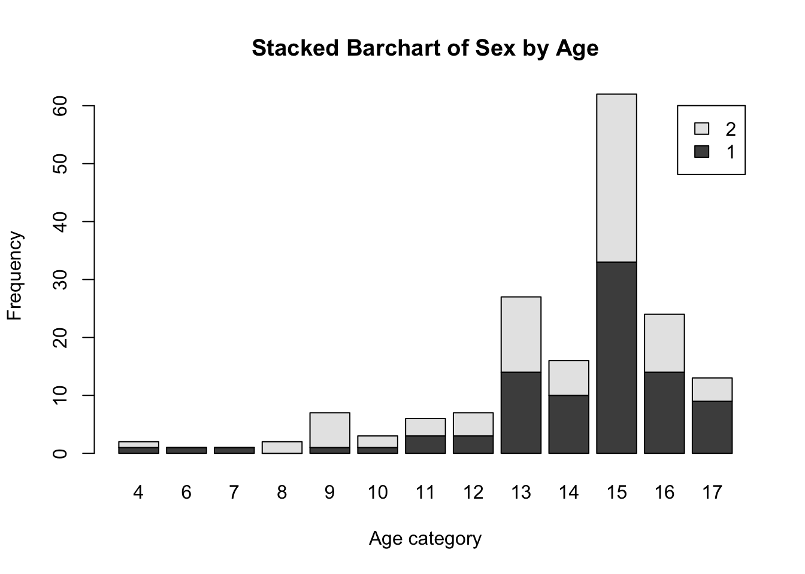

Assignments
Assignment 1
Collaborators: Sara Whitelaw, Halle Wasser
Problem 1
Install the datasets package on the console below using install.packages("datasets"). Now load the library.
library(datasets)Load the USArrests dataset and rename it dat. Note that this dataset comes with R, in the package datasets, so there’s no need to load data from your computer. Why is it useful to rename the dataset?
dat<-USArrestsIt is useful to rename the dataset because it makes the file easier to access and use in later coding functions.
Problem 2
Use this command to make the state names into a new variable called State.
dat$state <- tolower(rownames(USArrests))This dataset has the state names as row names, so we just want to make them into a new variable. We also make them all lower case, because that will help us draw a map later - the map function requires the states to be lower case.
List the variables contained in the dataset USArrests.
names(dat)## [1] "Murder" "Assault" "UrbanPop" "Rape" "state"The variables are Murder, Assault, UrbanPop, and Rape.
Problem 3
What type of variable (from the DVB chapter) is Murder?
Answer: Quantitative Variable
What R Type of variable is it?
Answer: Numeric in a list form
Problem 4
What information is contained in this dataset, in general? What do the numbers mean?
Answer: This data set gives us information on the frequency of murder, assault, and rape arrests per 100,000 residents in each state of the US in 1973. It also gives information on the percent of the population living in urban areas of each state.
Problem 5
Draw a histogram of Murder with proper labels and title.
hist(dat$Murder,main="Histogram of Murder Arrests in 1973", xlab="Murder Arrests In A State per 100,000 Residents", ylab="Frequency")
Problem 6
Please summarize Murder quantitatively. What are its mean and median? What is the difference between mean and median? What is a quartile, and why do you think R gives you the 1st Qu. and 3rd Qu.?
summary(dat$Murder)## Min. 1st Qu. Median Mean 3rd Qu. Max.
## 0.800 4.075 7.250 7.788 11.250 17.400The mean of the Murder data is 7.788 and the median is 7.25. The mean is the average value of the data set. In other words, the mean is all of the numbers in a data set added together and then divided by the total amount of numbers present in the set. In contrast, the median is the middle value of the data when the numerical data values are ordered from least to greatest. Quartiles of a data set are the 3 values that divide the observed data into even fourths. R gives the 1st and 3rd quartiles to give us insight into the spread of our data.
Problem 7
Repeat the same steps you followed for Murder, for the variables Assault and Rape. Now plot all three histograms together. You can do this by using the command par(mfrow=c(3,1)) and then plotting each of the three.
hist(dat$Assault,main="Histogram of Assault Arrests in USA in 1973", xlab="Assault Arrests In A State per 100,000 Residents", ylab="Frequency")summary(dat$Assault)## Min. 1st Qu. Median Mean 3rd Qu. Max.
## 45.0 109.0 159.0 170.8 249.0 337.0hist(dat$Rape,main="Histogram of Rape Arrests in USA in 1973", xlab="Rape Arrests In A State per 100,000 Residents", ylab="Frequency")
summary(dat$Rape)## Min. 1st Qu. Median Mean 3rd Qu. Max.
## 7.30 15.07 20.10 21.23 26.18 46.00par(mfrow=c(3,1))
hist(dat$Murder,main="Histogram of Murder Arrests in USA in 1973", xlab="Murder Arrests per 100,000 Residents In A State", ylab="Frequency")
hist(dat$Assault,main="Histogram of Assault Arrests in USA in 1973", xlab="Assault Arrests per 100,000 Residents In A State", ylab="Frequency")
hist(dat$Rape,main="Histogram of Rape Arrests in USA in 1973", xlab="Rape Arrests per 100,000 Residents In A State", ylab="Frequency")
The mean value for Assault is 170.76 and the median value is 159. The mean value for Rape is 21.232 and the median value is 20.1
What does the command par do, in your own words (you can look this up by asking R ?par)?
Answer: par is used to set or query graphical parameters.
What can you learn from plotting the histograms together?
Answer: We can see that the histograms for Murder and Rape Arrests skew to the left. We can also see that that there are more Assault arrests than Rape arrests, and more Rape arrests than Murder arrests.
Problem 8
In the console below (not in text), type install.packages("maps") and press Enter, and then type install.packages("ggplot2") and press Enter. This will install the packages so you can load the libraries.
Run this code:
library('maps')
library('ggplot2')
ggplot(dat, aes(map_id=state, fill=Murder)) +
geom_map(map=map_data("state")) +
expand_limits(x=map_data("state")$long, y=map_data("state")$lat)
What does this code do? Explain what each line is doing.
Answer: The install.packages command allows us to download and install packages from CRAN-like repositories or from local files. The library command allows one to add the functions installed from the package mentioned above into one’s library so that s/he can use those functions when coding. Lastly, the ggplot command initializes a ggplot object. It can be used to “declare the input data frame for a graphic and the specify the set of plot aesthetics intended to be common throughout all subsequent layers unless specifically overridden” (R). Overall, this set of commands creates a graph showing the frequency of murder arrests in each state, with darker blues corresponding to higher frequencies.
\[\\[2in]\]
Assignment 2
Collaborators: Sara Whitelaw
Problem 1
Load data and set your working directory.
#setwd("/Users/rachaelvillari/Documents/Fall 2021/CRIM250/Assignment 2")Read the data
dat <- read.csv(file = 'dat.nsduh.small.1.csv')What are the dimensions of the dataset?
dim(dat)## [1] 171 7The dimensions are 7 columns by 171 rows
Problem 2
List the variables contained in the dataset.
names(dat)## [1] "mjage" "cigage" "iralcage" "age2" "sexatract" "speakengl"
## [7] "irsex"The variables in this dataset are named mjage, cigage, iralcage, age2, sexatract, speakengl, and irsex.“mjage” gives information on the age at which a respondent first used marijuana or hashish. “cigage” gives information on how old the respondent was when s/he began smoking cigarettes every day. “iralcage” gives the age at which a respondent first tried alcohol. “age2” gives information on the final edited age of the respondent. The age is considered “edited” because there were multiple consistency checks throughout the questionnaire in which the respondent could provide different ages. “irsex” tells us the sex of the respondent (either male or female). “sexatract” provides information on the sexual orientation of the respondent. “speakengl” gives information on how well the respondent speaks English.
What is this dataset about? Who collected the data, what kind of sample is it, and what was the purpose of generating the data? Answer: This dataset gives information about NSDUH, a household interview survey of substance use, substance use disorders, mental health, and the receipt of treatment services for these disorders in the US.It was collected face-to-face by “field interviewers” who asked questions about less sensitive topics, and then directed respondents to a computer self-interviewing program for more sensitive topics. This dataset collected information from the civilian, noninstitutionalized population, aged 12 or older in all 50 states of the US and DC.The purpose of this dataset is to provide insight into substance use and mental health issues in the US. Doing so helps guide policy directions in addressing things such as problem substances, prevalence of mental illnesses, intersection of substance use and mental illness, and helps agencies make decisions about what types of resources are needed and where resources should be directed.
Problem 3: Age and gender
What is the age distribution of the sample like? Make sure you read the codebook to know what the variable values mean.
summary(dat$age2)## Min. 1st Qu. Median Mean 3rd Qu. Max.
## 4.00 13.00 15.00 13.98 15.00 17.00hist(dat$age2,main="Age Distribution of NSDUH Survey Sample", xlab="Age according to codebook", ylab="Frequency") The range of this data is from 12 years old (corresponding to “1” in the dataset) to 65+ years old (“17” in the dataset). The median age of this dataset is between 35 to 49 years old, and the mean is somewhere between 30 to 34 years old. However, since the data is skewed towards the higher values in this dataset, the median gives better insight into the data distribution. Overall, the distribution of this sample shows a continuous increase in frequency of age when going from 12 to 49 years old, but then dramatically decreases after 49 years old.
The range of this data is from 12 years old (corresponding to “1” in the dataset) to 65+ years old (“17” in the dataset). The median age of this dataset is between 35 to 49 years old, and the mean is somewhere between 30 to 34 years old. However, since the data is skewed towards the higher values in this dataset, the median gives better insight into the data distribution. Overall, the distribution of this sample shows a continuous increase in frequency of age when going from 12 to 49 years old, but then dramatically decreases after 49 years old.
Do you think this age distribution is representative of the US population? Why or why not? I do not think that this age distribution is representative of the US population. For one, any participant that was under 18 was required to have a parent or guardian present for the survey. This definitely could have skewed the sample population, as it would have required availability of both the parents and young adults. Another factor pointing to why this distribution is not representative of the US population is the fact that the proportion of 35 to 49 year old respondents is more than 10-100x that of 12 year olds. This distribution is not plausible in the real world, as older aged subjects are more at risk for life threatening illnesses than 12 year olds. So, if anything, the proportion of ages would be reversed (but still not as large as the one seen in the data’s distribution)
Is the sample balanced in terms of gender? If not, are there more females or males?
hist(dat$irsex,main="Reported Sex of Respondents", xlab="Sex", ylab="Frequency")
mean(dat$irsex)## [1] 1.467836The sample has slightly more male respondents than female respondents. This can be determined by the histogram, which shows a frequency a little over at for males and a frequency of almost 80 for females. We can also tell that the sample has more males than females because the mean is around 1.468 – a value just slightly under the average of 1 + 2 (1.5).
Use this code to draw a stacked bar plot to view the relationship between sex and age. What can you conclude from this plot?
tab.agesex <- table(dat$irsex, dat$age2)
barplot(tab.agesex,
main = "Stacked Barchart of Sex by Age",
xlab = "Age category", ylab = "Frequency",
legend.text = rownames(tab.agesex),
beside = FALSE) # Stacked bars (default) This plot tells us a couple things. First, the highest number of respondents were from the age group of 35 to 49 years old and, of this age range, approximately half of the respondents were male and half were female. Additionally, we can see that almost every age category has roughly equal ratios of male to female respondents. Some notable exceptions to this observation are in the 19 and 20 year old groups, which have more females than males and age groups 12-18, which have more male to female respondents. We also see a higher proportion of male:female respondents in the 30-34 and 65+ age groups. Overall, we can conclude that the age distribution skews to the left, with higher ages having a higher number of respondents and, as stated above, all ages have roughly equal ratios of male:female respondents.
Problem 4: Substance use
For which of the three substances included in the dataset (marijuana, alcohol, and cigarettes) do individuals tend to use the substance earlier?
par(mfrow=c(3,1))
hist(dat$mjage,main="Age When Respondents First Used Marijuana or Hashish", xlab="Age", ylab="Frequency")
hist(dat$iralcage,main="Age When Respondents First Tried Alcohol", xlab="Age", ylab="Frequency")
hist(dat$cigage,main="Age When Respondents Started Smoking Cigarettes Every Dat", xlab="Age", ylab="Frequency")summary(dat$mjage)## Min. 1st Qu. Median Mean 3rd Qu. Max.
## 7.00 14.00 16.00 15.99 17.50 35.00summary(dat$iralcage)## Min. 1st Qu. Median Mean 3rd Qu. Max.
## 5.00 13.00 15.00 14.95 17.00 23.00summary(dat$cigage)## Min. 1st Qu. Median Mean 3rd Qu. Max.
## 10.00 15.00 17.00 17.65 19.00 50.00Based on the histograms and summaries for all three variables, we are able to determine that individuals tend to use alcohol earlier than cigarettes and marijuana.
Problem 5: Sexual attraction
What does the distribution of sexual attraction look like? Is this what you expected?
library(dplyr)##
## Attaching package: 'dplyr'## The following objects are masked from 'package:stats':
##
## filter, lag## The following objects are masked from 'package:base':
##
## intersect, setdiff, setequal, uniondat$sexatract <- dat$sexatract %>% na_if(., "85")
dat$sexatract <- dat$sexatract %>% na_if(., "94")
dat$sexatract <- dat$sexatract %>% na_if(., "97")
dat$sexatract <- dat$sexatract %>% na_if(., "98")
dat$sexatract <- dat$sexatract %>% na_if(., "99")
hist(dat$sexatract,main="Sexual Attraction of Respondents", xlab="Sexual Orientation According To Codebook", ylab="Frequency") This histogram shows the distribution of sexual attraction if the codes 85,94,97,98, and 99 are removed. The distribution shows that by far the highest proportion of respondents reported their sexual attraction as “I am only attracted to the opposite sex”, or code “1”. There were also respondents who reported either the codes 85,94,97,98 or 99, which excluded them from this question one way or another. Since these responses do not give insight into the sexual orientation of the respondents, these values have been deemed “NA” and therefore do not show in the histogram.
This histogram shows the distribution of sexual attraction if the codes 85,94,97,98, and 99 are removed. The distribution shows that by far the highest proportion of respondents reported their sexual attraction as “I am only attracted to the opposite sex”, or code “1”. There were also respondents who reported either the codes 85,94,97,98 or 99, which excluded them from this question one way or another. Since these responses do not give insight into the sexual orientation of the respondents, these values have been deemed “NA” and therefore do not show in the histogram.
What is the distribution of sexual attraction by gender?
tab.attgen <- table(dat$irsex, dat$sexatract)
barplot(tab.attgen,
main = "Stacked barchart of sexual attraction by gender",
xlab = "Sexual Attraction Category", ylab = "Frequency",
legend.text = rownames(tab.attgen),
beside = FALSE) The sexual attraction category with the highest frequency is “I am only attracted to the opposite sex), or code”1". Of this category, there are overall more males than females. The frequency of respondents corresponding to each sexual attraction category decreases going from 1 to 6. The proportion of females to males is much higher for categories 2 and 3, while the proportion of males to females is higher for categories 5 and 6.
The sexual attraction category with the highest frequency is “I am only attracted to the opposite sex), or code”1". Of this category, there are overall more males than females. The frequency of respondents corresponding to each sexual attraction category decreases going from 1 to 6. The proportion of females to males is much higher for categories 2 and 3, while the proportion of males to females is higher for categories 5 and 6.
Problem 6: English speaking
What does the distribution of English speaking look like in the sample? Is this what you might expect for a random sample of the US population?
hist(dat$speakengl,main="How Well Participants Speak English", xlab="English Proficiency Category", ylab="Frequency") The distribution of English speaking in the sample shows that almost all participants responded that they speak English “Very well” (coded as “1”). We also see that the lowest English Proficiency rating given (3) corresponded to speaking “Not Well” rather than the lowest possible response, 4, which would have corresponded to “Not at all”. I think that this distribution is what I would expect for this sample, as the surveys were conducted only in English or Spanish, which limits the possible respondent pool, as you cannot give a survey to someone who doesn’t understand the language it is given in. However, I think that a random sample of the US population would probably show a little bit more of a spread, with some people responding “4”, and more people responding “2” or “3” than we see in the sample distribution.
The distribution of English speaking in the sample shows that almost all participants responded that they speak English “Very well” (coded as “1”). We also see that the lowest English Proficiency rating given (3) corresponded to speaking “Not Well” rather than the lowest possible response, 4, which would have corresponded to “Not at all”. I think that this distribution is what I would expect for this sample, as the surveys were conducted only in English or Spanish, which limits the possible respondent pool, as you cannot give a survey to someone who doesn’t understand the language it is given in. However, I think that a random sample of the US population would probably show a little bit more of a spread, with some people responding “4”, and more people responding “2” or “3” than we see in the sample distribution.
Are there more English speaker females or males?
tab.langgen <- table(dat$irsex, dat$speakengl)
barplot(tab.langgen,
main = "Stacked barchart of English speakers by gender",
xlab = "English Rating Category", ylab = "Frequency",
legend.text = rownames(tab.langgen),
beside = FALSE)
There are about an equal proportion of males:females for respondents who reported that they spoke English “Very Well”. However, we see that almost all respondents who reported they spoke English “Well” were male, while pretty much all respondents who reported that they spoke English “Not well” were female. \[\\[2in]\]
Exam 1
Create a folder in your computer (a good place would be under Crim 250, Exams).
Download the dataset from the Canvas website (fatal-police-shootings-data.csv) onto that folder, and save your Exam 1.Rmd file in the same folder.
Download the README.md file. This is the codebook.
Load the data into an R data frame.
dat <- read.csv("fatal-police-shootings-data.csv")Problem 1 (10 points)
- Describe the dataset. This is the source: https://github.com/washingtonpost/data-police-shootings . Write two sentences (max.) about this.
The dataset was collected by the Washington Post and contains records of every fatal police shooting in the US by a police officer since Jan.1 2015. It tracks several details about each victim, including their race, circumstances of the shooting, whether the victim was armed and whether the victim was experiencing a mental health crisis.
- How many observations are there in the data frame?
dim(dat)## [1] 6594 17There are 6594 observations for each of the 17 variables in the data frame. This overall leads to 112,098 observations, not excluding missing data points.
- Look at the names of the variables in the data frame. Describe what “body_camera”, “flee”, and “armed” represent, according to the codebook. Again, only write one sentence (max) per variable.
names(dat)## [1] "id" "name"
## [3] "date" "manner_of_death"
## [5] "armed" "age"
## [7] "gender" "race"
## [9] "city" "state"
## [11] "signs_of_mental_illness" "threat_level"
## [13] "flee" "body_camera"
## [15] "longitude" "latitude"
## [17] "is_geocoding_exact"“body_camera” gives a true or false statement regarding whether or not news reports indicated that the police officer was wearing a body camera and it caught some portion of the incident on film. “flee” tells us how/if the victim was moving away from the officer (by foot, car, or not fleeing). “armed” tells us if the victim was armed with some sort of implement that a police officer believed could cause harm.
- What are three weapons that you are surprised to find in the “armed” variable? Make a table of the values in “armed” to see the options.
table(dat$armed)##
## air conditioner
## 207 1
## air pistol Airsoft pistol
## 1 3
## ax barstool
## 24 1
## baseball bat baseball bat and bottle
## 20 1
## baseball bat and fireplace poker baseball bat and knife
## 1 1
## baton BB gun
## 6 15
## BB gun and vehicle bean-bag gun
## 1 1
## beer bottle binoculars
## 3 1
## blunt object bottle
## 5 1
## bow and arrow box cutter
## 1 13
## brick car, knife and mace
## 2 1
## carjack chain
## 1 3
## chain saw chainsaw
## 2 1
## chair claimed to be armed
## 4 1
## contractor's level cordless drill
## 1 1
## crossbow crowbar
## 9 5
## fireworks flagpole
## 1 1
## flashlight garden tool
## 2 2
## glass shard grenade
## 4 1
## gun gun and car
## 3798 12
## gun and knife gun and machete
## 22 3
## gun and sword gun and vehicle
## 1 17
## guns and explosives hammer
## 3 18
## hand torch hatchet
## 1 14
## hatchet and gun ice pick
## 2 1
## incendiary device knife
## 2 955
## knife and vehicle lawn mower blade
## 1 2
## machete machete and gun
## 51 1
## meat cleaver metal hand tool
## 6 2
## metal object metal pipe
## 5 16
## metal pole metal rake
## 4 1
## metal stick microphone
## 3 1
## motorcycle nail gun
## 1 1
## oar pellet gun
## 1 3
## pen pepper spray
## 1 2
## pick-axe piece of wood
## 4 7
## pipe pitchfork
## 7 2
## pole pole and knife
## 3 2
## railroad spikes rock
## 1 7
## samurai sword scissors
## 4 9
## screwdriver sharp object
## 16 14
## shovel spear
## 7 2
## stapler straight edge razor
## 1 5
## sword Taser
## 23 34
## tire iron toy weapon
## 4 226
## unarmed undetermined
## 421 188
## unknown weapon vehicle
## 82 213
## vehicle and gun vehicle and machete
## 8 1
## walking stick wasp spray
## 1 1
## wrench
## 1Three weapons I was surprised to find were walking stick, air conditioner, and fireworks. Note that missing values were not removed from this table and correspond to the column that is nameless.
Problem 2 (10 points)
- Describe the age distribution of the sample. Is this what you would expect to see?
library(dplyr)
dat$age %>% sort() %>% tail()## [1] 86 86 88 89 91 91hist(dat$age,main="Histogram of Age", xlab="Age", ylab="Frequency")
summary(dat$age)## Min. 1st Qu. Median Mean 3rd Qu. Max. NA's
## 6.00 27.00 35.00 37.12 45.00 91.00 308We see that the age distribution skews slightly to the left, with the median age being 35 years old. This distribution is what I would expect to see, as it is more likely for younger, middle-aged people (around 25-40) to be suspected of committing a crime and/or as dangerous than it is for very young children or older adults to be suspected as such. Note that missing values (NA in the dataset) were unable to be excluded from this histogram, which is why there are some values reported as “0” even though the youngest age included in the dataset was 6.
- To understand the center of the age distribution, would you use a mean or a median, and why? Find the one you picked.
summary(dat$age)## Min. 1st Qu. Median Mean 3rd Qu. Max. NA's
## 6.00 27.00 35.00 37.12 45.00 91.00 308Since the data is skewed, it is preferable to use the median to understand the center of age distribution.This is because, for unimodal skewed distributions, the mean is farther in the direction of the pulled out tail than the median is. This tends to occur because the median is considered to have a characteristic of robustness, while the mean does not have this characteristic.
- Describe the gender distribution of the sample. Do you find this surprising?
table(dat$gender)##
## F M
## 3 293 6298counts <- table(dat$gender)
barplot(counts, main="Gender Distribution", xlab="Gender", names=c("Missing","Female", "Male"))We see that there are way more male (6298) than female (293) victims in this sample. This is not very surprising, as men tend to be perceived as more dangerous than females in precarious situations, which would cause police officers, on average, to feel as if they must fire their weapons more on males than females. Note that values in the “missing” column were missing gender reports in the dataset.
Problem 3 (10 points)
- How many police officers had a body camera, according to news reports? What proportion is this of all the incidents in the data? Are you surprised that it is so high or low?
table(dat$body_camera)##
## False True
## 5684 910Only 910 officers were reported as having a body camera by news reports. This is only 13.8% of all cases reported in this dataset. I am not surprised that it is so low, as there have been many news reports about how police officers failed to have their body cameras on, even if it was mandated by their police force organization.
- In how many of the incidents was the victim fleeing? What proportion is this of the total number of incidents in the data? Is this what you would expect?
counts <- table(dat$flee)
barplot(counts, main="Did the victim flee", xlab="Fleeing type", names=c("Missing","Car", "Foot", "Not fleeing", "Other"))
table(dat$flee)##
## Car Foot Not fleeing Other
## 491 1058 845 3952 248The victim was fleeing either by car, foot, or “other”, in 2152 cases. This is only 32.6% of all cases reported. Note, however, that 491 cases did not have information on whether or not the victim was fleeing, and therefore this proportion estimate could be incorrect. I am surprised that the proportion of victims fleeing is not higher, as I would expect officers to use weapons in cases where they were concerned the victim was going to get away.
Problem 4 (10 points) - Answer only one of these (a or b).
- Describe the relationship between the variables “body camera” and “flee” using a stacked barplot. What can you conclude from this relationship?
Hint 1: The categories along the x-axis are the options for “flee”, each bar contains information about whether the police officer had a body camera (vertically), and the height along the y-axis shows the frequency of that category).
Hint 2: Also, if you are unsure about the syntax for barplot, run ?barplot in R and see some examples at the bottom of the documentation. This is usually a good way to look up the syntax of R code. You can also Google it.
tab.camflee <- table(dat$body_camera, dat$flee)
barplot(tab.camflee,
main = "Relationship between body camera flee",
xlab = "Fleeing Type", ylab = "Frequency",
legend.text = rownames(tab.camflee),
beside = FALSE) 
We can see that in every case, whether the victim was fleeing by car, foot, other, or not fleeing, the proportion of officers NOT wearing a body camera (dark grey) is much higher than the proportion of officers who were wearing a body camera (light grey). This is not surprising, as earlier we found out that only about 14% of cases in this dataset reported that officers were wearing a body camera. Thus, we would expect the proportion of officers wearing body cameras in the context of whether or not the victim was fleeing to be very small across the board. Note that the first column in this stacked bar plot references missing values for how/if the victim fled. Although this data was missing, it still shows the same relationship to body camera proportion as the other columns. Overall, we can conclude that regardless of the fleeing type, the proportion of officers wearing a body camera is very low.
Extra credit (10 points)
- What does this code tell us?
mydates <- as.Date(dat$date)
head(mydates)
(mydates[length(mydates)] - mydates[1])This code first creates a table called “mydates”and tells r to convert character data to dates with the “as.date” command. The second line, “head(mydates)”, tells us the first parts of the data frame, which in this case is the earliest date that data was collected. This earliest date reported is 01/02/2015. Lastly, the last line of code tells use how many days there are between the first and last date reported in the data set. In this case, 2458 days have passed since 01/02/2015 and the last recorded date in the dataset, which is 09/25/2021.
- On Friday, a new report was published that was described as follows by The Guardian: “More than half of US police killings are mislabelled or not reported, study finds.” Without reading this article now (due to limited time), why do you think police killings might be mislabelled or underreported?
Police killings are most likely mislabelled or underreported due to the fact that police forces want to keep this data hush hush. There are several incidents in which police wrongfully used fatal forces to detain a victim and obviously this casts a bad light on the policemen. We can infer that a lot of this data is biased, as it is the police force who is reporting these numbers and because the police force wants to avoid any bad light being shed on it.
- Regarding missing values in problem 4, do you see any? If so, do you think that’s all that’s missing from the data?
Yes, there are 491 missing values in regard to the type of fleeing. Surprisingly, there were no missing values for body camera reports. I think that it is all that is missing from the data for this specific variable (flee). However, there are several other missing data points in regards to other variables like age, gender, etc. \[\\[2in]\]